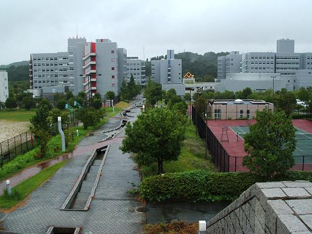
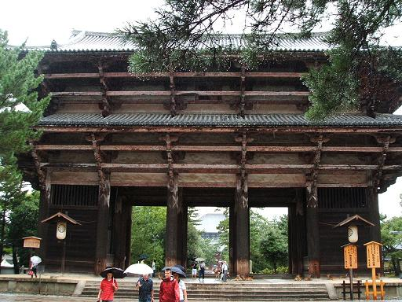
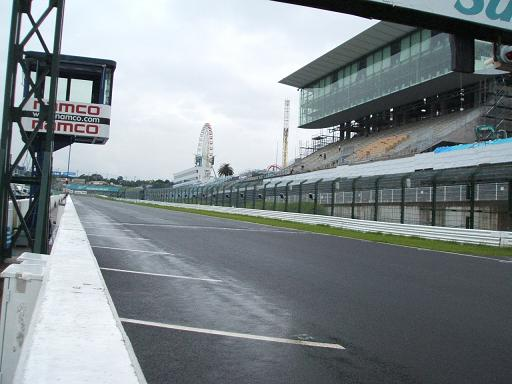
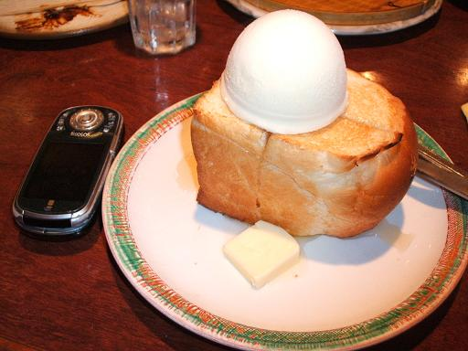
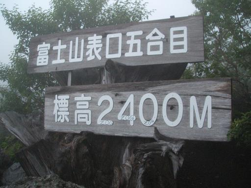
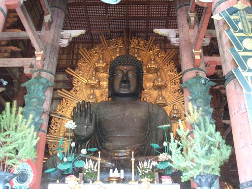

「２５歳で結婚するとするじゃろ、結婚する前に３、４年は付き合うとして、
・・もうそろそろ本命を考えないといかん歳なわけだ」
「別に(性格とか)合えば結婚前に付き合うのが１年くらいでもよくない？」
「いや、それはいかん。
だって四季を一回ずつ共に過ごしたからって
全部相手の事が解るってわけでもないじゃろ。
二回目の夏、三回目の夏に初めて解ることってけっこう多いはずだって」
「まぁそう言われたらそうかもしれんけど・・」
「RPGとかのゲームだってそうじゃろ？
１回クリアしたからって達成率が１００％なんてことなんかないじゃん。
１回クリアして、続けて２周目、３周目って繰り返して完成度を
あげていくものじゃん」
「じゃあ攻略本持って１回目から完璧にすりゃいいじゃん！」
「アホか恋愛に攻略本なんかねぇよ！！」
この旅最大の名言は「恋愛に攻略本はない」です。
よくゲームオーバーになりますし説得力ある言葉でしょう、タケユキです。
というわけで今回の旅はバイクが入院中だったり
大人数(と言っても４人)だったこともあり
日産レンタカーで
キューブを借りて東の方へ行ってきました。
出発前日まで目的地も決まってないグダグダ旅行だったわけで
走りながらあっちへフラフラこっちへフラフラみたいな感じで走ってました。
とりあえず東大寺を目指して走ってる途中に
田舎道の中奈良先端科学技術大学院(通称奈良先)を見つけた。
うちの大学から何人か流れていく大学院だとか違うとか。
奈良先
先端って言うからどんだけ先端かと思ってたらありえないくらいド田舎にあった。
俺の実家よりもっと田舎。
先端なのは科学技術だけみたいですよ。←うまいこと言った。
特に見るところもなかったので早々に撤退して東大寺へ。
東大寺南大門
たぶんここに来たのは小学校の修学旅行以来。
でかい。いや、でっかい。
大仏でっかい。南大門でっかい。
東大寺の大仏殿の柱には一つ穴が開いてて
その穴をくぐれたら願いが叶うとか、頭がよくなるとか
なんかいいことがあるって言われてるらしい。
ちなみにその穴の大きさは大仏の鼻の穴と同じだとかどうとか。
というわけで
通ってみた。
さすがに穴は大人の男には狭く自力では動くことすらできなかったけど
友達に引っ張ってもらってなんとか通過。
ほんとにいいことあるといいんだけど。
それから何時間か走って三重県鈴鹿へ。
鈴鹿サーキット
人生初のサーキット場。
行った日はレースもなにもやってなくて少し、
というかかなりさびしい感じだったけど。
でもなにもなかったおかげで
サーキットのコース間近まで行けたから結果的にはよかったのかも。
三重を過ぎたらあとはひたすら車で東へ。
夜まで走って名古屋で晩飯、
ひつまぶしと味噌串カツ、きしめんとちょっとずつつまんで食った。
一通り食べてお腹いっぱいになって、最後にデザート。
軽く食べるつもりだったのに頼んだはちみつバニラトースト運ばれてきたときびびった。
はちみつバニラトースト
いやでかいだろ。
はちみつを塗ってチンしたトーストにバニラアイス。
変わった組み合わせだと思ったけど食ってみたら意外に美味。
下は熱くて上は冷たい。でかかったけど。
揚げアイスの仲間みたいな感じでけっこうおいしかった。でかかったけど。
飯食った後はまた少し東に走って健康ランドに泊まる。
何種類かお風呂があって、そこに微妙に温水プールみたいなお風呂があった。
泳いだ。この夏最初の平泳ぎ。
そしてたぶんこの夏最後の平泳ぎ。
風呂に入りながら汗と一緒に少し心で涙を流した。
********************************************************
二日目、午前６時半起床。朝風呂。
すっかり目が覚めた後目的地の確認。
とりあえず当初の目的の名古屋までは来たみたけど
もともと二泊三日の予定。まだまだ時間には余裕がある。
ということで話し合いの結果目的地は富士山にまで足を伸ばすことに。
名古屋を抜け、静岡に入り、浜松、掛川、
そして爺が行方不明になる街新居を抜けて富士山を目指す。
途中かっぱ寿司で昼飯食ったりしながら富士山に車で上る。
上ってる最中はとにかく坂、坂、坂。
霧なのか雲なのかわからんけどもとにかく視界が悪い。
台風が近づいてるせいもあって天気も悪く、周りも空も真っ白。
午後４時過ぎようやく富士山五合目まで到着。
富士山五合目
車で登れるのはここまでが限界らしい。
天気も悪く徒歩で上る時間も技量もないので
五合目駐車場でちょっと時間をつぶして下山。
下山してからだんだん天気が悪くなる。
ちらほら雨が降り始めるけどこれからはとにかく西へ。
旅行に行った４人ともが車の免許は持ってたから交代しながら走る。
別の人が運転してる間は寝てようがお菓子食ってようが自由ってのがうれしい。
バイクだとはこうはいかんから。
夜。雨がひどくなってきたころに岐阜入り。
周りは道路の明かり以外は真っ暗。岐阜もかなりの田舎。
ちょっと眠くなったからアイマスク代わりにタオルを
カバンから出してきて顔にかけて寝る。
カバンから出してきた
タオルだと思ってたそれがパンツだった時の衝撃と
言ったらそれはもう・・。
そんなハプニングに出くわしながら過ごしたこの日は車中泊。
滋賀・京都と経由して大阪へ帰阪。
夜ってのはテンションがおかしくなるもので
友達の一人がおかしくなって
レイザーラモンがごとく
フォーーーッ！！って叫んだりしてた。
大丈夫かタダケン。
まぁ人にはいろいろあるだろうから深くは突っ込みはしませんが。
これでこの夏に北、東と行ったことになります。
遠いと思ってた富士山にも行こうと思えば
時間はかかったけど行けないことはないってことも分かったし。
たぶん行こうと思えばどこへでも行ける。
さて、次はどこに行こうか。
今日の写真集：↓。いつものごとく下の地名とかにカーソルを合わせてみて。

| 奈良先 |
東大寺大仏 |
東大寺南大門 |
南大門仁王「阿」 |
南大門仁王「吽」 |
| 伊賀上野城 |
伊賀〜俳聖殿〜 |
アインシュタイン |
鈴鹿メインストリート |
鈴鹿観客スタンド |
| トースト |
浜名湖 |
富士山五合目 |
富士〜視界ゼロ〜 |
鹿 |
| 東大寺〜柱の中のアホ一人〜 |
東大寺〜柱の中のアホ二人〜 |
空港公園 |